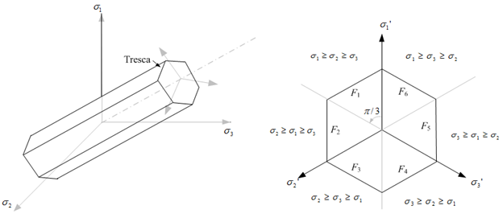
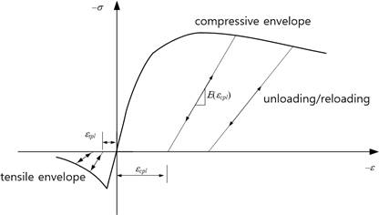
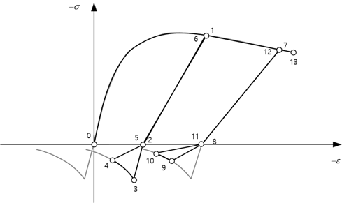
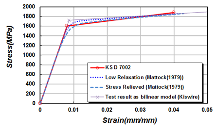
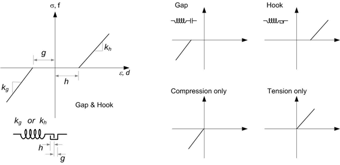
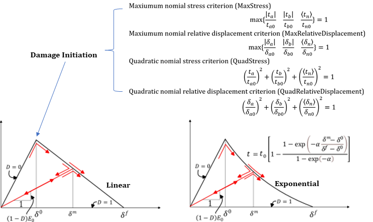

7. Material
Material models are defined using the *Material keyword. Each material must have a unique name, and duplicate names are not allowed. A material model is used to define various constitutive relationships, including the stress-strain relation, depending on the type of element.
| Type | Description | Usage |
|---|---|---|
| IsoElasticity | Isotropic Elasticity | Uniaxial and Multiaxial Stress-Strain Relation; LongTerm Concrete and Tendon options |
| OrthoElasticity | Orthotropic Elasticity | Multiaxial Stress-Strain Relation |
| vonMises | von Mises Plasticity | Uniaxial and Multiaxial Stress-Strain Relation |
| Tresca | Tresca Plasticity | Multiaxial Stress-Strain Relation |
| MohrCoulomb | Mohr Coulomb Plasticity | Multiaxial Stress-Strain Relation |
| DruckerPrager | Drucker Prager Plasticity | Multiaxial Stress-Strain Relation |
| UGeneric | Uniaxial Generic | Uniaxial Stress-Strain Relation; LongTerm Concrete option |
| USteel | Uniaxial Steel | Uniaxial Stress-Strain Relation; LongTerm Tendon option |
| GapHook | Uniaxial Gap-Hook | Uniaxial Stress-Strain Relation |
| Cohesive | Cohesive Material | Traction-Relative Displacement Relation |
| Acoustic | Acoustic Property | Property of Acoustic Element |
| Seepage | Seepage Property | Property of Seepage Element |
Stress-strain relations are broadly categorized into uniaxial and multiaxial types. The multiaxial type can be further divided into plane stress, plane strain, axisymmetric, shell, and general 3D stress conditions. Different element types require different types of stress-strain relations. For example, beam elements require uniaxial models, while shell elements require models that support shell-type multiaxial conditions. The vonMises model supports both uniaxial and multiaxial relations, so it can be used with beam elements. In contrast, the Tresca model only supports multiaxial relations, so it cannot be used with beam elements. Conversely, models such as UGeneric, USteel, and GapHook are uniaxial and thus cannot be used with solid or shell elements.
Uniaxial material models can also be borrowed to define constitutive relations for certain elements, such as Spring, EarthSpring, and MovingSpring elements. The following four types of relationships can be defined in this way:
- Force-Displacement: Translational spring
- Moment-Rotation: Rotational spring
- Force-Velocity: Translational damper
- Moment-Angular Velocity: Rotational damper
Additionally, uniaxial material models can be used when the behavior of an interface element is defined independently in each direction:
- Traction-Displacement: Interface element
In beam elements, uniaxial material models can also be applied to model nonlinear shear and torsional behavior similarly to springs:
- Scaled shear force–shear strain: Beam element
- Scaled torsional moment–rotation: Beam element
In such cases where uniaxial material models are borrowed, the stress-strain relationship is interpreted as the required form (e.g., force-displacement) without preserving the original physical meaning. For example, when a uniaxial material model is used for an X-direction spring, its stress-strain relation is treated as a force-displacement relation, with stress and force, strain and displacement converted in a one-to-one manner without physical equivalence.
Material DB Input
Some material models can use a material DB item name in place of direct numeric values. *Material Type always names the Hyfeast material model; the DB reference is detected from the first token of the dataline.
Material DB stores standard properties from design codes. Model-specific inelastic parameters that are not provided by the DB must still be entered directly using the existing datalines. Material DB reference input requires a prior global *Environment, Type=UnitSystem; the parser converts DB source values to the current global UnitSystem before using them as material or recipe values. Current built-in material DB items are listed below.
| DB | item |
|---|---|
| KDS concrete | KDS-2026-C<fck> |
| ACI 318 concrete | ACI318-2025-C<fck> |
| EC2 concrete | EC2-2004-C<fck> |
| KDS structural steel SS235 | KDS-2026-SS235-t16, KDS-2026-SS235-t40, KDS-2026-SS235-t100, KDS-2026-SS235-t100p |
| KDS structural steel SS275 | KDS-2026-SS275-t16, KDS-2026-SS275-t40, KDS-2026-SS275-t100, KDS-2026-SS275-t100p |
| KDS structural steel SS315 | KDS-2026-SS315-t16, KDS-2026-SS315-t40, KDS-2026-SS315-t100, KDS-2026-SS315-t100p |
| KDS structural steel SS410 | KDS-2026-SS410-t16, KDS-2026-SS410-t40 |
| KDS structural steel SS450 | KDS-2026-SS450-t16, KDS-2026-SS450-t40 |
| KDS structural steel SS550 | KDS-2026-SS550-t16, KDS-2026-SS550-t40 |
| KDS general rebar | KDS-2026-SD300, KDS-2026-SD400, KDS-2026-SD500, KDS-2026-SD600, KDS-2026-SD700 |
| KDS weldable rebar | KDS-2026-SD400W, KDS-2026-SD500W |
| KDS seismic rebar | KDS-2026-SD400S, KDS-2026-SD500S, KDS-2026-SD600S, KDS-2026-SD700S |
<fck> in KDS-2026-C<fck> and EC2-2004-C<fck> is the compressive strength in MPa. The year in KDS-2026 identifies the KDS component-document set valid in that year; individual component revision years and product-standard sources are preserved in citations. EC2-2004-C<fck> is the EN 1992-1-1:2004 cylinder-strength reference. <fck> in ACI318-2025-C<fck> is the specified compressive strength f'c in psi (for example, ACI318-2025-C4000 means f'c = 4000 psi); the C prefix is the Hyfeast concrete-strength token, not the ACI grade letter. The t16, t40, t100, and t100p suffixes for structural steel indicate thickness ranges that affect yield strength. Users must choose the item that matches the member thickness.
When a concrete DB item is expanded as the elastic modulus for IsoElasticity, KDS uses \(f_{cm}=f_{ck}+\Delta f\) and \(E_c=8500\sqrt[3]{f_{cm}}\;[\mathrm{MPa}]\). This is the KDS normal-weight concrete expression with \(m_c=2300\,\mathrm{kg/m^3}\), and material density does not recompute \(E_c\). ACI318-2025-C<fck> uses the normalweight simplified expression \(E_c=57000\sqrt{f'_c}\;[\mathrm{psi}]\); the coefficient is the representative value corresponding to \(w_c = 145\,\mathrm{lb/ft^3}\). EC2-2004-C<fck> uses \(f_{cm}=f_{ck}+8\) and \(E_c=E_{cm}=22000(f_{cm}/10)^{0.3}\;[\mathrm{MPa}]\).
For steel and rebar material DB items, the strength value used by DB fields or recipes is Fy. When a prestressing DB item is referenced directly from LongTerm, Tendon, its characteristic tensile strength and relaxation class are used. Rebar diameter and nominal area are section/size DB information, not Material DB information.
The following density values are used by *Material DB input when density is omitted. KDS, EC2, and steel rows list mass density. The ACI row lists the weight density \(w_c\) as used in ACI, with its approximate mass-density equivalent in parentheses; Hyfeast converts it to mass density before applying the current global UnitSystem. Concrete elastic-modulus formulas keep the assumptions described above and are not recomputed from these material density values.
| DB | Material category | density |
|---|---|---|
KDS-2026 |
concrete | \(2300\,\mathrm{kg/m^3}\) |
ACI318-2025 |
concrete | \(w_c = 145\,\mathrm{lb/ft^3}\) \((\mathrm{approx.}\ 2323\,\mathrm{kg/m^3})\) |
EC2-2004 |
concrete | \(2400\,\mathrm{kg/m^3}\) |
KDS-2026 |
structural steel | \(7850\,\mathrm{kg/m^3}\) |
KDS-2026 |
steel rebar | \(7850\,\mathrm{kg/m^3}\) |
| Type | DB reference meaning |
|---|---|
IsoElasticity |
Creates elastic properties from the DB item. Long-term concrete behavior references a function through a LongTerm, Concrete dataline, while tendon relaxation may directly reference a prestressing DB item through a LongTerm, Tendon dataline. |
vonMises |
Uses DB elastic properties and allows the Fy field-token in the value hardening yield position. |
UGeneric |
Uses concrete DB items indirectly through concrete envelope functions, and references a ConcreteTime function through a LongTerm, Concrete dataline for long-term concrete behavior. |
USteel |
Creates a Menegotto-Pinto-family input from a rebar or prestressing DB item plus a recipe token. Tendon relaxation may directly reference a prestressing DB item through a LongTerm, Tendon dataline. |
Tresca |
Replaces only the elastic-property first dataline; Fy may be used in the yield position. |
MohrCoulomb |
Replaces only the elastic-property first dataline. |
DruckerPrager |
Replaces only the elastic-property first dataline. |
ConcreteDamage |
Replaces only the elastic-property first dataline. |
DB reference input uses the default density listed above. If a different density is needed, use material-db-item[, density][, ToDirectForm] and override only density. E, nu, alpha, and recipe values still come from the DB; the override density is a direct numeric value in the current global UnitSystem.
UGeneric does not accept concrete DB items directly in the material dataline. Use concrete DB items first in ParabolaCEnv, HognestadCEnv, EC2CEnv, MPPCEnv, or MaekawaTEnv, then reference the generated function name as EnvFunc. Concrete long-term behavior references a separate ConcreteTime function through a LongTerm, Concrete dataline. These concrete function DB inputs also require a prior global UnitSystem where the selected function type requires it. The current built-in concrete DB item forms are KDS-2026-C<fck>, ACI318-2025-C<fck>, and EC2-2004-C<fck> for envelope functions, and KDS-2026-C<fck>, EC2-2004-C<fck>, and ACI209-1992-C<fc> for ConcreteTime; the allowed standards depend on the selected function type as described in the *Function manual.
7.1 *Material
Define material
*Material, Type=type, Name=name
...data lines depending on type
Keyword line
-
TYPE=type: type of materials.
- IsoElasticity: Isotropic Linear Elastic Material
- OrthoElasticity: Orthotropic Linear Elastic Material
- vonMises: von Mises plasticity
- Tresca: Tresca plasticity
- MohrCoulomb: Mohr-Coulomb plasticity
- DruckerPrager: Drucker-Prager plasticity
- UGeneric: Uniaxial generic
- USteel: Uniaxial steel
- GapHook: Uniaxial gap-hook
- Cohesive: Cohesive material
- Acoustic: Material for acoustic solid elements
-
Name=name: material name
7.1.1 *Material, Type=IsoElasticity
Define isotropic elasticity material
*Material, Type=IsoElasticity, Name=name
E, nu, alpha, density
[LongTerm, Concrete, timeFunction, nchain, lambda1, nsample]
[LongTerm, Tendon, standard, class, fp[, rho1000]]
[LongTerm, Tendon, material-db-item[, rho1000]]
*Material, Type=IsoElasticity, Name=name
material-db-item[, density][, ToDirectForm]
[LongTerm, Concrete, timeFunction, nchain, lambda1, nsample]
[LongTerm, Tendon, standard, class, fp[, rho1000]]
[LongTerm, Tendon, material-db-item[, rho1000]]
Choose only one of the three LongTerm dataline forms shown above.
First data line
- E: elastic modulus (required)
- nu: Poisson’s ratio (optional, default 0.)
- alpha: thermal expansion coefficient (optional, default 0.)
- density: Density for the direct numeric dataline (optional, default 0.). In a DB dataline, omitted
densitymeans the DB density, not 0. - material-db-item: material DB item name. It replaces
E,nu,alpha, anddensitywith DB elastic properties. Ifdensityfollows the DB item, that value overrides only density; otherwise, the DB density is used. - ToDirectForm: Optional final DB dataline token. It expands the DB input to direct numeric values when saved or reprinted.
LongTerm, Concrete dataline
- timeFunction: Name of a
*Function, Type=ConcreteTimefunction. StandardConcreteTimefunctions evaluate concrete age variables in day units. - nchain: Number of Kelvin chains (optional, default 4).
- lambda1: First retardation time \(\lambda_1\) (optional). Enter this value in days. If omitted, the referenced
ConcreteTimefunction supplies its internal default. Specifylambda1here to override that Function-side default for this material. - nsample: Number of creep compliance fitting samples (optional, default
10*nchain). It must be larger thannchain.
The time variable \(t\) for long-term material models comes from ELTIME, the element elapsed physical time after activation. ELTIME starts at 0 when the element is activated and advances by physical-time step increments. To represent concrete age before loading, use an unloaded Static, Quasi step instead of an initial-age field in LongTerm, Concrete.
Do not combine LongTerm, Concrete and LongTerm, Tendon in the same IsoElasticity material.
LongTerm, Tendon dataline
- standard:
KDS-2025orEC2-2004. - class: Relaxation class, one of
Class1,Class2, orClass3. - fp: Characteristic tensile strength used in the stress ratio. Use \(f_{pu}\) for
KDS-2025and \(f_{pk}\) forEC2-2004. Direct numeric input uses the stress unit of the current globalUnitSystem; in anN-mmunit system this is MPa(\(N/mm^2\)). - material-db-item: Prestressing material DB item name. The DB item supplies the standard, relaxation class, and characteristic tensile strength, converted from the DB source unit to the stress unit of the current global
UnitSystem. - rho1000: Optional 1000-hour relaxation loss in percent. If omitted, the DB item value or class default is used; class defaults are 8 for
Class1, 2.5 forClass2, and 4 forClass3.
Theory and behavior
IsoElasticity + LongTerm, Concrete is interpreted as isotropic linear aging viscoelasticity. The E in the first dataline is used as the reference-age elastic modulus, and the elastic-modulus age factor \(a_E(t)\) from ConcreteTime defines the modulus at the current element elapsed time \(t\).
Stress is computed from the current-age elastic matrix \(\mathbf{D}_{\nu}(E(t))\) and the elastic strain obtained after subtracting long-term nonmechanical strains.
Here, \(\nu\) is the IsoElasticity Poisson's ratio; there is no separate creep Poisson ratio input. \(\bar{\mathbf{S}}_{\nu}\) is the normalized isotropic compliance obtained by setting \(E=1\).
For LongTerm, Concrete, creep is driven by the compressive principal-stress path. The stress vector is first converted to a symmetric stress tensor, then split in principal space:
The creep-driving increment is \(\Delta\boldsymbol{\sigma}^c_n=\boldsymbol{\sigma}^c_{n+1}-\boldsymbol{\sigma}^c_n\), converted back to the material stress-vector order before applying the normalized compliance. This split applies compression along each principal direction and handles tension-compression crossing at zero stress. If principal directions are rotated from the element axes, the reconstructed compressive tensor can contain shear components.
This definition has the following implications. Because tensile stress history does not contribute directly to creep history, time-dependent deformation along non-compressive paths — such as the tensile region after prestressing or near-cracking tensile loading — is not represented, and how conservative the result is depends on the stress state. In multiaxial form the compressive stress tensor is passed through the isotropic normalized compliance \(\bar{\mathbf{S}}_{\nu}\), so a tensile principal direction orthogonal to a compressive one still receives a lateral creep strain scaled by \(-\nu\). When a step crosses from compression to tension, \(\Delta\boldsymbol{\sigma}^c_n\) enters as an unloading increment that removes the existing compressive stress and partially recovers the chain history, and during a subsequent tensile interval the chain state still decays by \(\exp(-\Delta t_n/\lambda_\alpha)\).
The ConcreteTime function supplies \(C(t,\tau)\) as creep compliance, and \(\tau\) is the loading age of each compressive stress-path increment. In incremental analysis, this history integral is approximated by a Kelvin chain. With nchain equal to \(m\), the retardation times are:
For each loading age \(\tau\), the coefficients \(c_\alpha(\tau)\) are fitted to the target ConcreteTime creep compliance by least squares over logarithmically spaced sample times \(s_j\). The sample range is from \(\lambda_1/3\) to \(2\lambda_m\), and the number of samples is nsample.
The implementation stores internal variables \(\mathbf{q}^{\alpha}_n\) instead of reintegrating the full stress history. For a time increment \(\Delta t_n=t_{n+1}-t_n\), the existing chain history produces the creep-strain increment, and the new compressive stress-path increment is stored as the next chain history.
For \(\Delta t_n=0\), the final time-integration factor is treated as 1. Shrinkage is a stress-independent time strain supplied by ConcreteTime. Shrinkage and thermal strains are applied only in isotropic normal directions.
\(\mathbf{m}\) is \([1]\) for uniaxial states, [1,1,0,1] for plane-family states, and [1,1,1,0,0,0] for 3D and shell-family states. EAG is the aging correction strain stored so that changing \(E(t)\) with age does not create an artificial stress jump. At the new time \(t_{n+1}\), the elastic strain matching the previous stress \(\sigma_n\) is recomputed, and the difference is stored in EAG.
In output, ELTIME is the element elapsed physical time after activation, and this value is used as the time variable \(t\) for long-term material behavior. ECR, ESH, and EAG are the creep, shrinkage, and aging-correction strains. ETH is thermal strain, and ENM is reported as:
Plane-family output components use [11, 22, 12, 33]; 3D and shell-family outputs use [11, 22, 33, 12, 23, 31].
IsoElasticity + LongTerm, Tendon is supported only in uniaxial stress conditions. Relaxation is evaluated only when the current tendon stress is tensile. The time increment is taken from the TUnit of the active Static, Quasi step and converted to hours for the standard formula. Re-tensioning or stress changes are modeled by the existing *State commands; the material input itself does not carry a jacking schedule.
The relaxation loss is accumulated monotonically and converted to a nonmechanical strain increment with the initial elastic modulus \(E_0\). This strain contributes to ENM and E, while no separate relaxation field is reported. See the USteel LongTerm, Tendon theory description for the standard equation and incremental update rule.
Example
*Material, Type=IsoElasticity Name=iso
200., 0.2 # E, nu, alpha, density
*Function, Type=ConcreteTime, Name=Conc30Time
KDS-2026-C30, 70, 200, 7, Type1, Moist
*Material, Type=IsoElasticity Name=conc30
KDS-2026-C30
LongTerm, Concrete, Conc30Time, 4, 1, 40
7.1.2 *Material, Type=OrthoElasticity
Define orthotropic elasticity
*Material, Type=OrthoElasticity, Name=name
E1,E2,E3, G12,G23,G31, nu12,nu23,nu31, a1,a2,a3, density, cs
First data line
- E1, E2, E3: Elastic moduli(required)
- G12, G23, G31: Shear moduli (required)
- nu12, nu23, nu31: Poisson's ratios(required)
- a1,a2,a3: thermal expansion coefficient (optional, default 0)
- density: density(optional, default 0.)
- cs: material coordinate system(optional). If not given, global coordinate system is used for material coordinates
cs defines the base material coordinate direction. For *Section, Type=CompositePlate, the ply angle is specified on the CompositePlate data line, not in the material definition.
Example
*Material, Type=OrthoElasticity Name=ortho
200.,100.,100., 50.,30.,30., 0.12, 0.12, 0.12, 1E-6, 1.2E-6, 1.4E-4, 7810., cs
# E1, E2, E3, G12, G23, G31, nu12, nu23, nu31, a1, a2, a3, density, cs
*Material, Type=OrthoElasticity Name=ortho
200.,100.,100., 50.,30.,30., 0.12, 0.12, 0.12, 1E-6, 1.2E-6, 1.4E-4, 7810.
# E1, E2, E3, G12, G23, G31, nu12, nu23, nu31, a1, a2, a3, density
7.1.3 *Material, Type=vonMises
Define von Mises plasticity(J2 plasticity)
*Material, Type=vonMises, Name=name
E, nu, alpha, density | material-db-item[, density][, ToDirectForm]
yield, H, theta, Kinf, K0, delta
*Material, Type=vonMises, Name=name
E, nu, alpha, density | material-db-item[, density][, ToDirectForm]
isoHardFunc, kinHardFunc|H
First data line
- E: elastic modulus (required)
- nu: Poisson’s ratio (optional, default 0.)
- alpha: themal expansion coefficient (optional, default 0.)
- density: Density for the direct numeric dataline (optional, default 0.). In a DB dataline, omitted
densitymeans the DB density, not 0. - material-db-item: material DB item name. It replaces
E,nu,alpha, anddensitywith DB elastic properties. Ifdensityfollows the DB item, that value overrides only density; otherwise, the DB density is used. - ToDirectForm: Optional final DB dataline token. It expands the DB input to direct numeric values when saved or reprinted.
Second data line for value (when the first entry is not a function name)
- yield: Initial yield value (required). If the first dataline used
material-db-item,Fymay be used here to reference the DB yield strength. - H: slope after initial yield (optional, default 0)
- theta: Mixed hardening parameter (optional, default 0)
- Kinf: Saturation hardening parameter (optional, default 0)
- K0: Saturation hardening parameter (optional, default 0)
- delta: Saturation hardening parameter (optional, default 0)
Second data line for function (when the first entry is a function name)
- isoHardFunc: Isotropic hardening function. (required)
- kinHardFunc or H: Kinematic hardening function or modulus(optional, default 0)
When specified as value
When specified as value, the following equation is applied.
- Linear mixed hardening model
- Saturation isotropic hardening and linear kinematic hardening model
\(\bar{H}\) is a constant, and when \(\theta = 0\), only kinematic hardening is applied, while when \(\theta = 1\), only isotropic hardening is applied. The condition \(0 \le \theta \le 1\) must be satisfied. In the linear mixed hardening model, \(dK/d \kappa = (1-\theta)\bar{H}\) represents the isotropic hardening modulus, and \((1-\theta) \bar{H}\) is the kinematic hardening modulus.
If the conditions \(\bar{K}_\infty = \bar{K}_0\) or \(\delta = 0\) are satisfied, it corresponds to linear mixed hardening. In linear mixed hardening, \(\bar{H}\) can take negative values; however, in the saturation isotropic hardening and linear kinematic hardening model, the conditions \(\bar{H} \ge 0\), \(\bar{K}_\infty \ge \bar{K}_0 \gt 0\), and \(\delta \ge 0\) must be satisfied.
 Fig. 7.2-1. Linear hardening
Fig. 7.2-1. Linear hardening
When specified as function
If uniaxial tensile test results for the material are available, proper calibration can be performed using them. In this case, the appropriate use of Type=Function can be applied. One important point to note is that when both isotropic hardening and kinematic hardening are present, the second elastic modulus must be configured to satisfy the equation as shown in Figure 7.2-2.
 Fig. 7.2-2. Nonlinear hardening
Fig. 7.2-2. Nonlinear hardening
Example
# Linear isotropic hardening case
*Material, Type=vonMises, Name=steel1
2000000. # E, nu, alpha, density
3000., 300.,1. # yield, H, theta, Kinf, K0, delta
# Linear kinematic hardening case
*Material, Type=vonMises, Name=steel2
2000000. # E, nu, alpha, density
3000., 300., # yield, H, theta, Kinf, K0, delta
# Nonlinear isotropic hardening case
*Function, Type=MultiLinear, Name=isoFunc
0. 200.
0.01 210.
*Material, Type=vonMises, Name=steel3
200000. # E, nu, alpha, density
isoFunc # isoHardFunc, kinHardFunc|H
# Nonlinear isotropic hardening, linear kinematic hardening case
*Material, Type=vonMises, Name=steel4
200000. # E, nu, alpha, density
isoFunc, 20. # isoHardFunc, kinHardFunc|H
# Nonlinear isotropic/kinematic hardening case
*Material, Type=vonMises, Name=steel5
200000. # E, nu, alpha, density
isoFunc, kinFunc # isoHardFunc, kinHardFunc|H
# Perfectly plastic steel from material DB
*Material, Type=vonMises, Name=SS275
KDS-2026-SS275-t16
Fy, 0, 1
7.1.4 *Material, Type=Tresca
Define Tresca plasticity material model
*Material, Type=Tresca, Name=name
E, nu, alpha, density | material-db-item[, density][, ToDirectForm]
{yield,dyield}|yieldFunc
[StrainHardening|IsotropicHardening]
First data line
- E: elastic modulus (required)
- nu: Poisson’s ratio (optional, default 0.)
- alpha: themal expansion coefficient (optional, default 0.)
- density: Density for the direct numeric dataline (optional, default 0.). In a DB dataline, omitted
densitymeans the DB density, not 0. - material-db-item: material DB item name. It replaces
E,nu,alpha, anddensitywith DB elastic properties. Ifdensityfollows the DB item, that value overrides only density; otherwise, the DB density is used. - ToDirectForm: Optional final DB dataline token. It expands the DB input to direct numeric values when saved or reprinted.
Second data line
- yield,dyield: initial yield value(required), and the derivative after initial yielding(optional, default 0.). If the first dataline used
material-db-item,Fymay be used in theyieldposition. - yieldFunc: yield function(required)
Optional last data line
- StrainHardening|IsotropicHardening: hardening type(optional, default “StrainHardening”)
The Tresca material model has the following yield function and flow potential:
The hardening rule can apply strain hardening, work hardening, or the isotropic associative hardening rule. In the Tresca model, work hardening and associative isotropic hardening are identical.

Fig. 7.2-3. Tresca yield criteriaExample
*Function, Type=MultiLinear, Name=trYield
0. 0.
0.01 10.
0.02 15
# no hardening case with sy = 20.
*Material, Type=Tresca, Name=steelT1
2E6, 0.18, 1E-5, 7850 # E, nu, alpha, density
20 # yield, dyield
# linear hardening case with strain hardening
*Material, Type=Tresca, Name=steelT2
2E6, 0.18, 1E-5, 7850 # E, nu, alpha, density
20, 0.1 # yield, dyield
# linear hardening case with isotropic hardening
*Material, Type=Tresca, Name=steelT3
2E6, 0.18, 1E-5, 7850 # E, nu, alpha, density
20, 0.1 # yield, dyield
IsotropicHardening # StrainHardening|IsotropicHardening
# nonlinear hardening case
*Material, Type=Tresca, Name=steelT4
2E6, 0.18, 1E-5, 7850 # E, nu, alpha, density
trYield # yieldFunc
# elastic properties and yield from material DB
*Material, Type=Tresca, Name=steelT5
KDS-2026-SS275-t16
Fy
7.1.5 *Material, Type=MohrCoulomb
Define Mohr-Coulomb material
*Material, Type=MohrCoulomb, Name=name
E, nu, alpha, density | material-db-item[, density][, ToDirectForm]
{coh,dcoh}|cohFunc
{fric,dfric}|fricFunc
{dila,ddila}|dilaFunc
[StrainHardening|IsotropicHardening]
First data line
- E: elastic modulus (required)
- nu: Poisson’s ratio (optional, default 0.)
- alpha: themal expansion coefficient (optional, default 0.)
- density: Density for the direct numeric dataline (optional, default 0.). In a DB dataline, omitted
densitymeans the DB density, not 0. - material-db-item: material DB item name. It replaces
E,nu,alpha, anddensitywith DB elastic properties. Ifdensityfollows the DB item, that value overrides only density; otherwise, the DB density is used. - ToDirectForm: Optional final DB dataline token. It expands the DB input to direct numeric values when saved or reprinted.
Second data line
- coh,dcoh: initial value (required) and derivative of cohesion (optional, default 0.)
- cohFunc: function name of cohesion function (required)
Third data line (frictional quantities)
- fric,dfric: initial value(required) and derivative of friction angle. (optional, default 0.)
- fricFunc: function name of friction angle function (required)
Fourth data line (dilatant quantities)
- dila,ddila: initial value and derivative of dilatant angle (default 0., 0.)
- dilaFunc: function name of dilatant function (optional)
Optional last data line
- StrainHardening|IsotropicHardening: hardening type(optional, default “StrainHardening”)
The units for the frictional angle and dilatant angle are in degrees, not radians. If the value of the dilatant angle is equal to the frictional angle, the associative flow rule is applied. Otherwise, the non-associative flow rule is applied. The initial cohesion (cohesion0) must be specified as a non-zero value. When using the associative isotropic hardening (i.e., IsotropicHardening) as the hardening rule, constant frictional and dilatant angles must be used.
The Mohr-Coulomb material model uses the following yield function and plastic potential.
 Fig. 7.2-4. Mohr-Coulomb yield criteria
Fig. 7.2-4. Mohr-Coulomb yield criteria
The hardening rules include strain hardening and isotropic hardening. The Mohr-Coulomb model does not include work hardening.
Example
# associative flow rule, no hardening
*Material, Type=MohrCoulomb, Name=soil1
2E6, 0.18, 1E-5, 7850
20 # coh, dcoh
35 # fric, dfric
35 # dila, ddila
# associative flow rule, strain hardening
# linear hardening of cohesion, constant friction and dilatency
*Material, Type=MohrCoulomb, Name=soil2
2E6, 0.18, 1E-5, 7850
20,3.
35,
30.
# associative flow rule, associative isotropic hardening
# linear hardening of cohesion, constant friction and dilatency
*Material, Type=MohrCoulomb, Name=soil3
2E6, 0.18, 1E-5, 7850
20,3.
35,
30.
IsotropicHardening
# associative flow rule, associative isotropic hardening,
# linear hardening of cohesion, friction
*Material, Type=MohrCoulomb, Name=soil4
2E6, 0.18, 1E-5, 7850
20,3.
35, 0.2
# non-associative flow rule, strain hardening,
# nonlinear hardening of cohesion, friction, dilatency
*Function, Name=cohFunc
0., 20.
0.001, 25.
0.002, 25.
*Function, Name=fricFunc
0. 35.
0.001, 40.
0.002, 45.
*Function, Name=dilaFunc
0. 30.
0.001 35.
0.002 40.
*Material, Type=MohrCoulomb, Name=soil5
2E6, 0.18, 1E-5, 7850
cohFunc
fricFunc
dilaFunc
# elastic properties from material DB
*Material, Type=MohrCoulomb, Name=soil6
KDS-2026-C30
2.0
35.0
10.0
7.1.6 *Material, Type=DruckerPrager
Define Isotropic elasticity material
*Material, Type=DruckerPrager, Name=name
E, nu, alpha, density | material-db-item[, density][, ToDirectForm]
beta
coh,dcoh|cohFunc,
af,daf|afFunc
ap,dap|apFunc
[StrainHardening|IsotropicHardening]
First data line
- E: elastic modulus (required)
- nu: Poisson’s ratio (optional, default 0.)
- alpha: themal expansion coefficient (optional, default 0.)
- density: Density for the direct numeric dataline (optional, default 0.). In a DB dataline, omitted
densitymeans the DB density, not 0. - material-db-item: material DB item name. It replaces
E,nu,alpha, anddensitywith DB elastic properties. Ifdensityfollows the DB item, that value overrides only density; otherwise, the DB density is used. - ToDirectForm: Optional final DB dataline token. It expands the DB input to direct numeric values when saved or reprinted.
Second data line
- beta: beta (required)
3rd data line
- coh, dcoh: initial value(required) and derivative of cohesion (optional, default 0.,0.)
- cohFunc: function name of cohesion(required)
4th data line (frictional quantity)
- af, daf: initial value and derivative of alpha. ( default 0., 0.)
- afFunc: function name of alpha (required)
5th data line (dilatent quantity)
- ap, dap: initial value(required) and derivative of alphaP (dilatency) (optional, default 0.)
- apFunc: function name of alphaP (required)
Optional last data line
- StrainHardening|IsotropicHardening: hardening type(optional, default “StrainHardening”)
The units for the frictional angle and dilatant angle are in degrees, not radians. If the value of the dilatant angle is equal to the frictional angle, the associative flow rule is applied. Otherwise, the non-associative flow rule is applied. The initial cohesion (cohesion0) must be specified as a non-zero value. When using the associative isotropic hardening (i.e., IsotropicHardening) as the hardening rule, constant frictional and dilatant angles must be used.
In the Drucker-Prager material model, the yield function and plastic potential are as follows.
▪ Flow potential : same to yield function
There are two types of hardening laws: strain hardening and isotropic hardening. In the Drucker–Prager model, work hardening does not exist.
 Fig. 7.2-5. Flow rule of Drucker-Prager model
Fig. 7.2-5. Flow rule of Drucker-Prager model
Example
*Material, Type=DruckerPrager, Name=concreteDP
2E6, 0.18, 1E-5, 7850 # E, nu, alpha, density
4 # beta
12.3 # coh,dcoh|cohFunc,
20 # af,daf|afFunc
20 # ap,dap|apFunc
*Material, Type=DruckerPrager, Name=rockDP
KDS-2026-C30
1.0
2.0
0.12
0.08
IsotropicHardening
7.1.7 *Material, Type=ConcreteDamage [Reserved]
Define concrete damage plasticity material model.
*Material, Type=ConcreteDamage, Name=name
E, nu, alpha, density | material-db-item[, density][, ToDirectForm]
fc, Dc, wc
ft, Dt, wt
a, Kc, ap, ecc
First data line
- E: elastic modulus (required for direct numeric input)
- nu: Poisson's ratio (optional, default 0.)
- alpha: thermal expansion coefficient (optional, default 0.)
- density: Density for the direct numeric dataline (optional, default 0.). In a DB dataline, omitted
densitymeans the DB density, not 0. - material-db-item: material DB item name. It replaces only
E,nu,alpha, anddensitywith DB elastic properties. Ifdensityfollows the DB item, that value overrides only density; otherwise, the DB density is used. - ToDirectForm: Optional last token for DB input. When used, save/reprint expands the DB input into direct numeric values in the current global UnitSystem.
Second and third data lines
- fc: compression hardening function (required)
- Dc: compression damage function (optional)
- wc: compression recovery parameter (optional, default 1.)
- ft: tension hardening function (required)
- Dt: tension damage function (optional)
- wt: tension recovery parameter (optional, default 1.)
Fourth data line
- a: dilation angle (optional, default 0.14)
- Kc: yield surface shape parameter (optional, default ⅔)
- ap: plastic potential eccentricity parameter (optional, default 0.2)
- ecc: flow potential eccentricity (optional, default 0.1)
Example
*Function, Name=chard
0., 20.
0.001, 25.
0.002, 25.
*Function, Name=thard
0., 2.
0.001, 1.
0.002, 0.2
*Material, Type=ConcreteDamage, Name=concreteCD
29188.6, 0.18, 1e-05, 2300 # E, nu, alpha, density
chard, , 1 # fc, Dc, wc
thard, , 1 # ft, Dt, wt
0.12, 0.666667, 0.2, 0.1 # a, Kc, ap, ecc
7.1.8 *Material, Type=UGeneric
Define uniaxial generic material
*Material, Type=UGeneric, Name=name
Compression|Tension, EnvFunc, Plastic|Secant|IEFunc,
...
LongTerm, Concrete, timeFunction, nchain, lambda1, nsample
alpha, density
First data line and optional second data line
- Compression|Tension: Indicates whether the current line defines compression-side or tension-side properties.
- EnvFunc: Envelope function (required)
- Plastic|Secant|IEFunc: Specify function for plastic unloading, secant unloading, or damage plastic unloading (optional, default Plastic)
LongTerm, Concrete data line
- timeFunction: Name of a
*Function, Type=ConcreteTimefunction. StandardConcreteTimefunctions evaluate concrete age variables in day units. - nchain: Number of Kelvin chains \(m\) (optional, default
4). - lambda1: First retardation time \(\lambda_1\) (optional). Enter this value in days. If omitted, the referenced
ConcreteTimefunction supplies its internal default. Specifylambda1here to override that Function-side default for this material. - nsample: Number of sampling points used for Kelvin chain fitting (optional, default
10*nchain). When specified directly,nsample > nchainis required.
Material time starts at 0 and advances by step time increments. Pre-loading concrete age is represented by an unloaded Static, Quasi step.
Optional Last data line if necessary
- alpha: themal expansion coefficient (optional, default 0.)
- density: density (optional, default 0.).
UGenericdoes not take a material DB item dataline, so enterdensityhere directly. Even whenEnvFuncnames a concrete function created from DB input, that DB density is not applied automatically toUGeneric.
The UGeneric model is a uniaxial material model that allows independent definition of tension and compression behavior. In particular, it can be used as a simplified plastic-damage model for concrete by neglecting energy dissipation during unloading and reloading in compression. Independent failure envelopes must be defined for both compression and tension sides, and during unloading/reloading, one can choose between a plastic model without damage (hereafter referred to as plastic), a plastic-damage model (hereafter referred to as damage plastic), or a plastic-elastic model (hereafter referred to as damage elastic). If applying the plastic-damage model, unloading and reloading are carried out along the segment connecting the point corresponding to the most recent strain (\(\epsilon_{cun}\) or \(\epsilon_{tun}\) at point \((\epsilon_{cun},\sigma_{cun})\) or \((\epsilon_{tun},\sigma_{tun})\)) and the plastic strain specified by the plastic strain function (corresponding to \(\epsilon_{cpl}\) or \(\epsilon_{tpl}\)). Therefore, it is necessary to specify the function in the form of \((\epsilon_{cpl},\sigma_{cun})\) or \((\epsilon_{tpl},\sigma_{tun})\).
Concrete DB items such as KDS-2026-C<fck>, ACI318-2025-C<fck>, and EC2-2004-C<fck> are not entered directly in a UGeneric material dataline. Create envelope functions first with *Function, Type=ParabolaCEnv, HognestadCEnv, EC2CEnv, MPPCEnv, or MaekawaTEnv, then use those function names in the EnvFunc position. These Function DB inputs require a global UnitSystem. ParabolaCEnv generates section-analysis parameters, so do not mix it with general compressive envelope material properties.
Compression and tension envelopes are independent. MaekawaTEnv does not take a compression envelope name in its dataline; direct input is Ec, ft[, c], and DB input is KDS-2026-C<fck>|ACI318-2025-C<fck>|EC2-2004-C<fck>[, c][, ToDirectForm].

Fig. 7.2-6. Failure envelope, unloading/reloading of UGeneric Fig. 7.2-7. Secant unloading/unloading of UGeneric
Fig. 7.2-7. Secant unloading/unloading of UGeneric
Under cyclic loading conditions, elastic behavior continues until the yield value corresponding to the plastic strain is reached, after which yielding follows the failure envelope. When secant loading/unloading is specified, there is no corresponding inelastic strain.
 Fig. 7.2-8. Cyclic loading of UGeneric
Fig. 7.2-8. Cyclic loading of UGeneric

Fig. 7.2-9. Cyclic loading of UGeneric for tensile secant unloadingLongTerm, Concrete option
LongTerm, Concrete combines the compression and tension envelope functions defined above with a separate ConcreteTime function for aging, creep, and shrinkage. The material dataline itself does not accept concrete DB items such as KDS-2026-C<fck>, ACI318-2025-C<fck>, EC2-2004-C<fck>, or ACI209-1992-C<fc> directly. Put DB items in the appropriate *Function datalines, then reference the resulting function names from UGeneric.
The equations below summarize the time-dependent components used by this option. See the *Function manual for ConcreteTime DB input formats and allowed standards.
LongTerm, Concrete time-dependent behavior
The ConcreteTime function provides age factors, creep compliance, and shrinkage strain through the following series.
The aging effect scales the 28-day envelope to the material properties at time \(t\).
The aging effect creates an aging strain stored as EAG. For uniaxial concrete time-dependent material, the non-mechanical strain is split as follows.
Creep compliance is evaluated as a separated function of elapsed time after loading \(t-\tau\) and loading age \(\tau\).
UGeneric + LongTerm, Concrete approximates this creep compliance with a Kelvin chain. With nchain equal to \(m\), the retardation times are arranged as follows.
The Kelvin moduli \(E_\alpha(\tau)\) are identified by least-squares fitting to the target creep compliance.
For LongTerm, Concrete, creep uses only the compressive stress path. In uniaxial form this is \(\Delta\sigma^c_n=\min(\sigma_{n+1},0)-\min(\sigma_n,0)\). In multiaxial IsoElasticity, the same idea is applied in principal-stress space and then transformed back to the material axes.
This uniaxial compression-only formulation does not act on tensile stress history, so time-dependent deformation in prestressed-concrete tensile regions or near-cracking tensile loading is not represented, and how conservative the result is depends on the stress state. When a step crosses from compression to tension, \(\Delta\sigma^c_n\) enters as an unloading increment that removes the existing compressive stress and partially recovers the chain history, and during a subsequent tensile interval the chain state still decays by \(\exp(-\Delta t_n/\lambda_\alpha)\).
During incremental analysis, internal variables \(q^\alpha_n\) are stored instead of the full stress history.
Shrinkage is supplied by ConcreteTime as the stress-independent signed value \(\varepsilon^{sh}(t)\); ordinary shrinkage is stored internally as a negative strain in Hyfeast.
Examples
Basic UGeneric envelope example:
*Function, Type=MPPCEnv, Name=MPP
27, 25000, 0.002 # fco, Ec, eco, ecu, fcc, esp
*Function, Type=MPPCIE, Name=MPPIE
MPP # compressiveEnv, epeak
*Function, Type=MaekawaTEnv, Name=Maekawa
25000, 3, 0.4 # Ec, ft, c
*Material, Type=UGeneric, Name=Mander
Compression, MPP, MPPIE
Tension, Maekawa,Secant
*Material, Type=UGeneric, Name=Mander
Compression, MPP
Tension, Maekawa, Secant
*Function, Type=EC2CEnv, Name=Conc30C
EC2-2004-C30
*Function, Type=MaekawaTEnv, Name=Conc30T
KDS-2026-C30
*Material, Type=UGeneric, Name=Conc30
Compression, Conc30C, Secant
Tension, Conc30T, Secant
LongTerm, Concrete example:
*Function, Type=EC2CEnv, Name=Conc30C
EC2-2004-C30
*Function, Type=MaekawaTEnv, Name=Conc30T
KDS-2026-C30
*Function, Type=ConcreteTime, Name=Conc30Time
EC2-2004-C30, 70, 200, 3, N
*Material, Type=UGeneric, Name=Conc30TimeMat
Compression, Conc30C, Secant
Tension, Conc30T, Secant
LongTerm, Concrete, Conc30Time, 4, 1, 40
0, 0
7.1.9 *Material, Type=USteel
Define uniaxial steel model based on Menegotto-Pinto model
*Material, Type=USteel, Name=name
E0, yield, E1, R0,a1,a2, a3,a4, eu, alpha, density
[LongTerm, Tendon, standard, class, fp[, rho1000]]
[LongTerm, Tendon, material-db-item[, rho1000]]
*Material, Type=USteel, Name=name
material-db-item, NoHardening|Hardening|Mattock-StressRelieved|Mattock-LowRelaxation[, density][, ToDirectForm]
[LongTerm, Tendon, standard, class, fp[, rho1000]]
[LongTerm, Tendon, material-db-item[, rho1000]]
First data line
- E0: Initial tangent modulus (required)
- yield: yield stress ( required )
- E1: Second tangent modulus (optional, default 0.)
- R0,a1,a2: curvature parameters (optional, default 20, 0, 0)
- a3,a3: isotropic hardening parameters (optional, default 0, 1.)
- eu: ultimate strain (optional, default 0). If eu = 0., then ultimate strain is not checked.
- alpha: themal expansion coefficient (optional, default 0.)
- density: density (optional, default 0.)
DB recipe data line
- material-db-item: General/weldable rebar or prestressing material DB item name. Structural steel DB items are not USteel recipe items, and seismic rebar DB recipes are not defined in v1.0.0.
- NoHardening: USteel curve with
E1 = 0; this is not perfectly plastic because the Menegotto-Pinto transition parameters still apply. - Hardening: Hardening recipe for rebar.
- Mattock-StressRelieved: Mattock recipe for stress-relieved 7-wire strand.
- Mattock-LowRelaxation: Mattock recipe for low-relaxation 7-wire strand.
- density: Optional override for the DB recipe density only. If omitted, the DB density is used.
- ToDirectForm: Optional final DB recipe dataline token. It expands the DB recipe to direct numeric values when saved or reprinted.
LongTerm, Tendon dataline
- standard:
KDS-2025orEC2-2004. - class: Relaxation class, one of
Class1,Class2, orClass3. - fp: Characteristic tensile strength used in the stress ratio. Use \(f_{pu}\) for
KDS-2025and \(f_{pk}\) forEC2-2004. Direct numeric input uses the stress unit of the current globalUnitSystem; in anN-mmunit system this is MPa(\(N/mm^2\)). - material-db-item: Prestressing material DB item name. Specify it again in this dataline even when it is the same item used by the DB recipe dataline. The DB item supplies the standard, relaxation class, and characteristic tensile strength, converted from the DB source unit to the stress unit of the current global
UnitSystem. - rho1000: Optional 1000-hour relaxation loss in percent. If omitted, the DB item value or class default is used; class defaults are 8 for
Class1, 2.5 forClass2, and 4 forClass3.
Mechanical behavior
USteel uses Menegotto-Pinto model with some modifications of partial reloading problem. It can be used for modeling rebar or prestressing steel.
 Fig. 7.2-10. Menegotto-Pinto Model
Fig. 7.2-10. Menegotto-Pinto Model
The recommended values of modeling rebar and 7-wire strand is given in the example.
 Fig. 7.2-11. Stress-strain curve of a weldable rebar with 400 MPa yield strength
Fig. 7.2-11. Stress-strain curve of a weldable rebar with 400 MPa yield strength

Fig. 7.2-12. Stress-strain curve of 7-wire strand with ultimate strength 1860 MPaLong-term behavior
LongTerm, Tendon applies only to uniaxial tendon relaxation. It advances during Static, Quasi time increments using the step TUnit, acts only in tension, and converts the monotonic stress loss to relaxation strain with the initial elastic modulus E0. Re-tensioning is handled through the existing *State input flow.
KDS and EC2 inputs use the following tendon prestress relaxation equation. Let \(\sigma_p^*\) be the reference stress obtained by adding the already accumulated relaxation loss to the current tensile stress, and let \(f_p\) be the characteristic tensile strength. The stress ratio is:
For KDS-2025, \(f_p=f_{pu}\). For EC2-2004, \(f_p=f_{pk}\). Time \(t\) is in hours, and rho1000 is the 1000-hour relaxation loss in percent.
The class coefficients are:
| class | \(c_r\) | \(a_r\) | default \(\rho_{1000}\) |
|---|---|---|---|
Class1 |
5.39 | 6.7 | 8 |
Class2 |
0.66 | 9.1 | 2.5 |
Class3 |
1.98 | 8.0 | 4 |
In incremental analysis, the accumulated relaxation loss \(L_n\) is converted to an equivalent time of the standard equation, then the current step time increment \(\Delta t\) is added to compute the target accumulated loss.
The added loss in the step is \(\max(0,L_{n+1}^{\mathrm{target}}-L_n)\) and is capped by the remaining tensile stress. This stress loss is divided by the initial elastic modulus \(E_0\), not the tangent modulus, to store the relaxation strain increment.
Example
# 400 MPa rebar without hardening
*Material, Type=USteel, Name=SD40
200000,400, 0, 20,18.5,0.15, 0.01, 7, 0.08
# E0, yield, E1, R0,a1,a2, a3,a4, eu, alpha, density
# 400 MPa weldable rebar without hardening
*Material, Type=USteel, Name=SD40W
200000, 400, 0, 20,18.5,0.15, 0.01, 7, 0.13
# E0, yield, E1, R0,a1,a2, a3,a4, eu, alpha, density
# 400 MPa rebar with hardening
*Material, Type=USteel, Name=SD40-U
200000, 400, 0.01282*200000, 20,18.5,0.15, 0.01, 7, 0.08
# 400 MPa weldable rebar with hardening
*Material, Type=USteel, Name=SD40W-U
200000, 400, 0.0586*200000, 20,18.5,0.15, 0.01, 7, 0.13
# Stress-relieved 7-wire strand with ultimate strength 1860 MPa
*Material, Type=USteel, Name=STendon
200000, 1652.891, 200000*0.03, 6, 0., 0., 0, 1, 0.0428
# Low relaxation 7-wire strand with ultimate strength 1860 MPa
*Material, Type=USteel, Name=RTendon
200000, 1694.915, 200000*0.025, 10,0.,0., 0, 1, 0.0415
LongTerm, Tendon, KDS-2025, Class2, 1860
7.1.10 *Material, Type=GapHook
Specify uniaxial gap-hook material.
*Material, Type=GapHook, Name=name
kg,g, kh,h
First data line
- kg,g: tangent and gap in compression part (optional, default 0.,0.)
- kh,h: tangent and hook tension part (optional,default 0.,0.)
Using the GapHook command, you can model tension-only or compression-only behavior. Both kg and kh cannot be zero at the same time.

Fig. 7.2-13. GapHook ModelExample
*Material, Type=GapHook, Name=gaphook
5E5, 0.1, 4E5, 0.2 # kg, g, kh, h
# tension only
*Material, Type=GapHook, Name=cable
0, 0, 5E5 # kg, g, kh, h
# compression only
*Material, Type=GapHook, Name=contactSpring
5E5 # kg, g, kh, h
7.1.11 *Material, Type=Cohesive
Define cohesive zone material
*Material, Type=Cohesive, Name=name
Eaa, Ebb, Enn, Eab, Ebn, Ena
MaxStress|MaxRelativeDisplacement|QuadStress|QuadRelativeDisplacement, da0, db0, dn0
{Linear, df, kappa} | {Exponential, alpha, df, kappa}
First data line
- Eaa, Ebb, Enn, Eab, Ebn, Ena: Stiffness components in each local direction (aa, bb, nn, ab, bn, na). Each value may be a scalar (stiffness) or a material name representing a stress-displacement relationship. Eab, Ebn, and Ena are optional. If omitted, they default to zero.
Optional two data lines if damage exists
- MaxStress|MaxSeparation|QuadStress|QuadRelativeDisplacement, da0, db0, dn0: MaxStress|MaxRelativedisplacement|QuadStress|QuadRelativeDisplacement indicate damage initiation criterion. da0, db0, and dn0 are directional relative displacements at damage initiation.
- Linear: Linear softening curve for damage evolution
- Exponential, alpha: Exponential softening curve and its parameter for damage evolution
- df: Effective relative displacement at failure
- kappa: Viscosity prameter. optional. defaut 0.
When only the first data line is defined, a purely elastic model is applied.
Here, the subscripts \(a\), \(b\), and \(n\) refer to the local coordinate system, representing the two tangential directions and the normal direction, respectively.
where, D is a damage evolution index, which is determined by internal state. D is zero before damage, one at failure. To considering combined stress state(mixed fracture mode), effective relative displacement is defined as follows:
where \(<∗>\) is the Macaulay bracket, which returns the value if it is positive, and zero otherwise.
To define damage behavior, both the damage initiation and the damage evolution after initiation must be specified. Damage initiation can be defined based on one of four criteria as shown in the figure below. Once damage begins, the cohesive traction follows a softening behavior. This softening function can be either linear or exponential.

Fig. 7.2-14. Cohesive MaterialExample
# Unit N-mm
*Material, Type=Cohesive, Name=Epoxy_Elastic
100000, 100000, 50000
*Material, Type=Cohesive, Name=Epoxy_Interface
100000, 100000, 50000
QuadStress, 0.02, 0.02, 0.05
Linear, 0.03
*Material, Type=Cohesive, Name=Adhesive_Bond
80000, 80000, 40000
MaxRelativeDisplacement, 0.015, 0.015, 0.01
Exponential, 2, 0.03
7.1.12 *Material, Type=Acoustic
Define properties for acoustic solid element
*Material, Type=Acoustic, Name=name
bulk, density
First data line
- bulk: Bulk modulus (required). If zero bulk modulus is given, the acoustic medium is assumed to be incompressible (Laplace equation is used)
- density: density (required)
Example
*Material, Type=Acoustic, Name=water
2190E6, 1000
7.1.13 *Material, Type=Seepage
Define properties for seepage solid element
*Material, Type=Seepage, Name=name
k | kx, ky | kx, ky, kz[, CS][, TUnit=tUnit]
gamma|auto, Ss
VGM, thetaR, thetaS, air, n[, m, l][, AirEntry=Relative, value] | User, SWCC, RelHCF
First data line
- k | kx, ky | kx, ky, kz: Permeability [L/T] (required). For seepage quantities whose dimensions include time, the time basis must be consistent with the seepage step time.
- CS: Coordinate system with type Orientation (optional)
- TUnit=tUnit: Specifies the [T] unit used by the permeability values (optional). Supported
tUnitvalues ares,min,hr, andday. If omitted, permeability uses the global time unit from*Environment, Type=UnitSystem. For Steady without a global unit system, all quantities with a time dimension must use the same consistent unit \([T]\), and no time-unit conversion is applied. Transient without a global unit system uses the stepTUnit. If the input time unit of permeability differs from the analysis time basis, only permeability is converted.
Second data line
- gamma: Water weight density [F/L^3] (required). Use a numeric value or arithmetic expression. Use
autoto set the standard water unit weight from the current global*Environment, Type=UnitSystem;autouses \(g_0=9.80665\,\mathrm{m/s^2}\) and \(\gamma_w=1000g_0\), converted to the current force-length unit system. Direct expressions usingg0, such as1000*g0, also require a global*Environment, TYPE=UnitSystem. Numeric input is printed back as numeric input and is not inferred asauto. - Ss: Specific storage (required). It is usually a [1/L] quantity, so no separate time unit is specified.
Third data line for SWCC/HCF using VGM (optional)
- VGM, tR, tS, air, n, m, l: van Genuchten-Mualem (VGM) SWCC and HCF. If given m,l is optional. If not given, m=1-1/n, l = 0.5
- AirEntry=Relative,value: Treats the singular saturated-end derivative of VGM when \(n\leq2\).
valueis the positive dimensionless quantity \(a_{VG}s_E\), so the air-entry suction is \(s_E=value/a_{VG}\). The material is saturated for \(s\leq s_E\), and the remaining VGM branch is rescaled to be continuous at the boundary. The treatment is always active for \(n\leq2\) and defaults toRelative,0.05when omitted. Specifying this item overrides the defaultvalue. It is not applied for \(n>2\), whether specified or omitted, and it cannot be specified for aUsermodel.
Third data line for SWCC/HCF using User (optional)
- User, SWCC, RelHCF: Defines an unsaturated model using two existing single-series Functions. Both Functions take positive suction as \(x\).
SWCCreturns volumetric water content and must be non-increasing.RelHCFreturns the relative hydraulic conductivity \(k_r=K/K_s\), must be non-increasing, and must remain in \([0,1]\). The solver uses their slopes for the material tangent.DataCurve,MultiLinear, andStringFunctions are supported; a missing derivative for aStringFunction is evaluated numerically. For \(p\geq0\) the material is saturated (\(k_r=1\), capacity \(S_s/\gamma_w\)) and the Functions are not evaluated;SWCC(0)is used as the saturated water content, soRelHCF(0)should be 1 andSWCC(0)should equal \(\theta_s\) to avoid a jump at \(p=0\). AStringFunction with a range returns 0 outside that range, so the Functions must cover the whole suction range of the analysis. - Suction unit: If a referenced Function has
UnitSystem=..., its \(x\) values use that UnitSystem's pressure unit. Otherwise they use the model's global pressure unit. When both are defined, Hyfeast converts model suction to each Function's local pressure unit before evaluation. If only the Function defines a UnitSystem, the suction is passed without conversion.
If the third data line is omitted, the material is treated as saturation-only. In this case, even if negative pore water pressure (= suction) occurs during the analysis, the SWCC and the reduction in relative hydraulic conductivity are not applied, and the hydraulic conductivity remains at the saturated value, Ks. Therefore, for analyses in which an unsaturated zone may develop, the SWCC and HCF (for example, VGM or User) must be specified.
Example
*Environment, Type=UnitSystem
N-m-s-K
*Function, Type=MultiLinear, UnitSystem=kN-m-s-K, Name=UserSWCC
0, 0.42
10, 0.38
50, 0.25
*Function, Type=MultiLinear, UnitSystem=kN-m-s-K, Name=UserRelHCF
0, 1.0
10, 0.4
50, 0.01
*Material, Type=Seepage, Name=SatIso
1.0e-6
auto, 1.0e-5
*Material, Type=Seepage, Name=UnsatIso1
2.0e-6
9810, 1.0e-5
VGM, 0.05, 0.42, 1.5, 1.6, AirEntry=Relative, 0.02
*Material, Type=Seepage, Name=UnsatIso2
2.0e-6
9810, 0
VGM, 0.05, 0.42, 1.5, 1.6
*Material, Type=Seepage, Name=UnsatUser
2.0e-6
9810, 0
User, UserSWCC, UserRelHCF
*CoordinateSystem, Type=Orientation, Name=d30
cos(30*pi/180), sin(30*pi/180), 0
0,1,0
*Material, Type=Seepage, Name=UnsatAniso3D
1.0e-6, 5.0e-7, 2.0e-6, d30
9810, 1.0e-5
VGM, 0.08, 0.46, 2.0, 1.4, 0.2857, 0.5